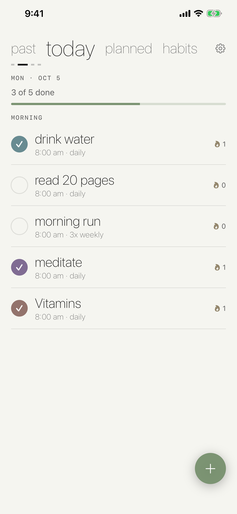
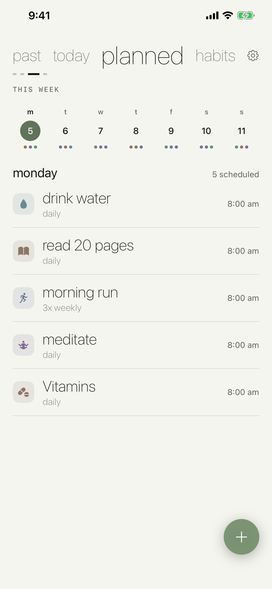
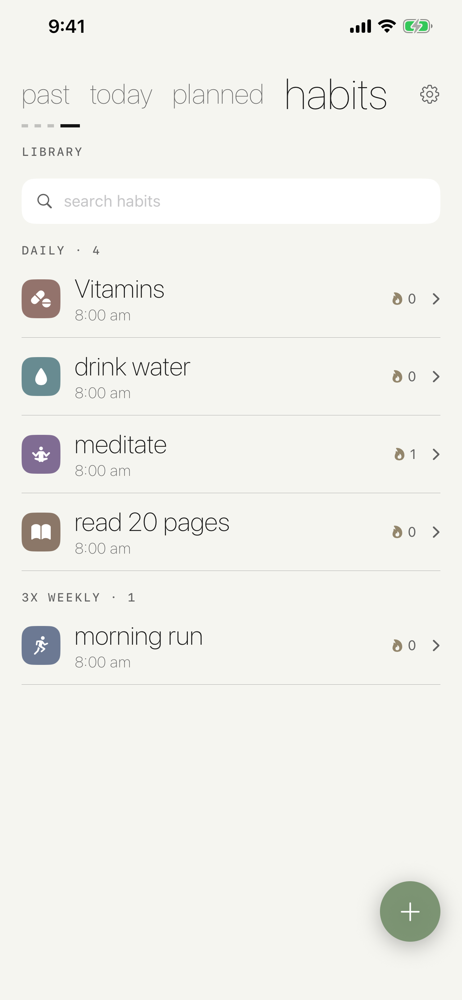
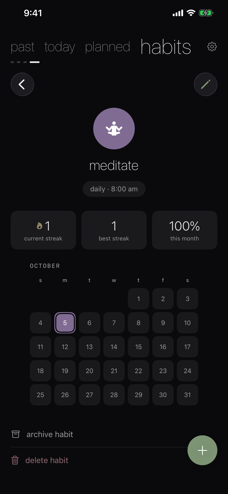
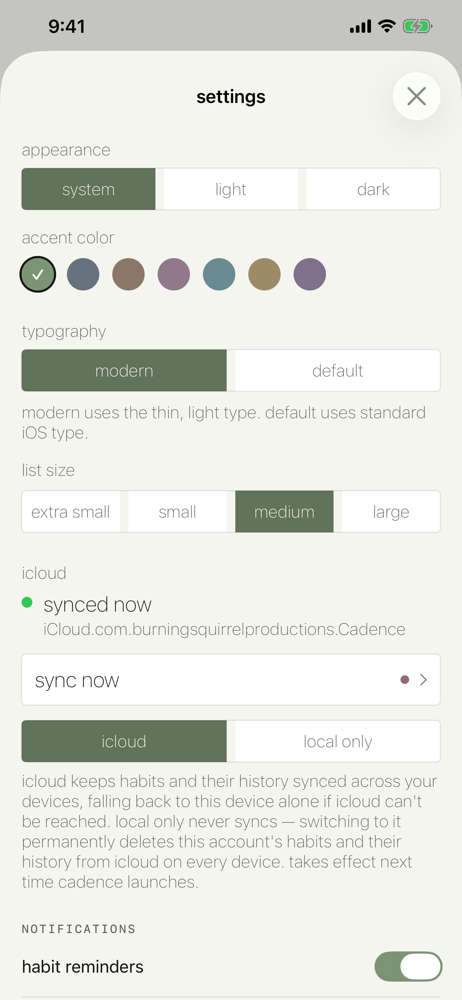
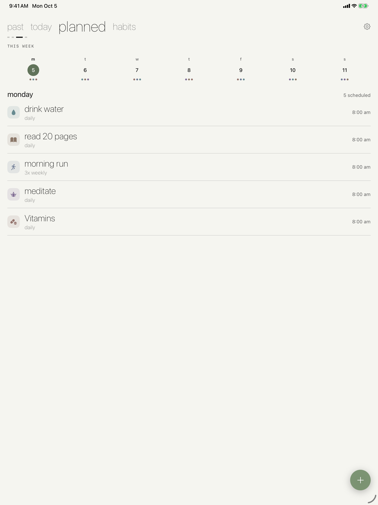
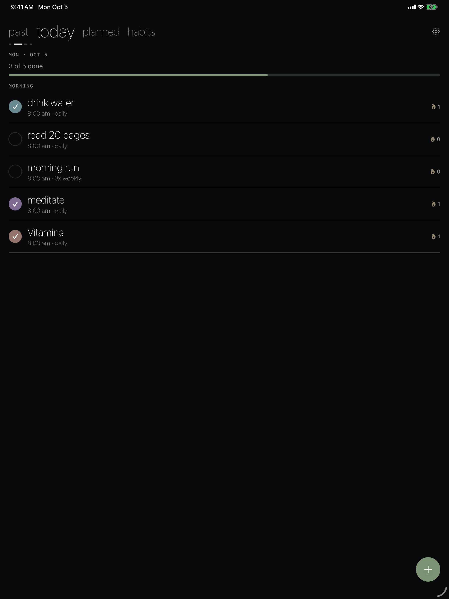
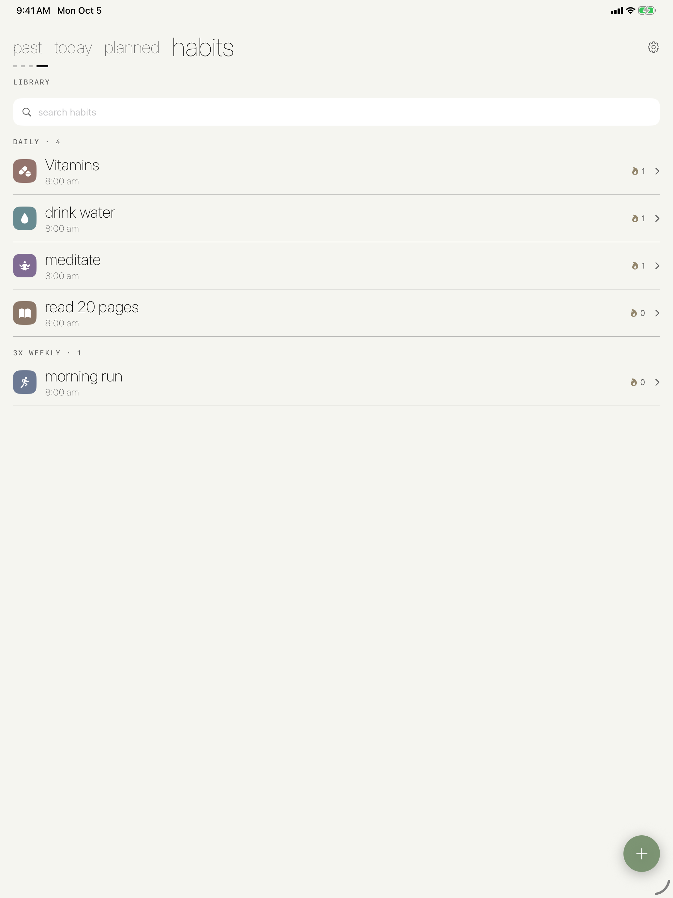

Cadence
Habits on a schedule you actually keep — and a streak that shows it.
Habits on a schedule you actually keep — and a streak that shows it.
Cadence is a habit tracker built around schedules rather than daily guilt. Give each habit the days it belongs to, an icon, and a color, then check it off from today's list. Upcoming days show what's planned, past days show what got done, and every habit keeps its streak and a calendar heatmap of its history.
iPhone





iPad



Every day, weekdays, or just Tuesdays — each habit only shows up on the days it's meant to.
Each habit tracks its current streak and paints its history onto a calendar you can scan at a glance.
Notifications fire on scheduled days only if the habit isn't already checked off, plus an optional daily summary.
The same habits and history on iPhone and iPad, with a live sync-status screen. No account, no tracking.
Keep Exploring
Back to the productivity apps